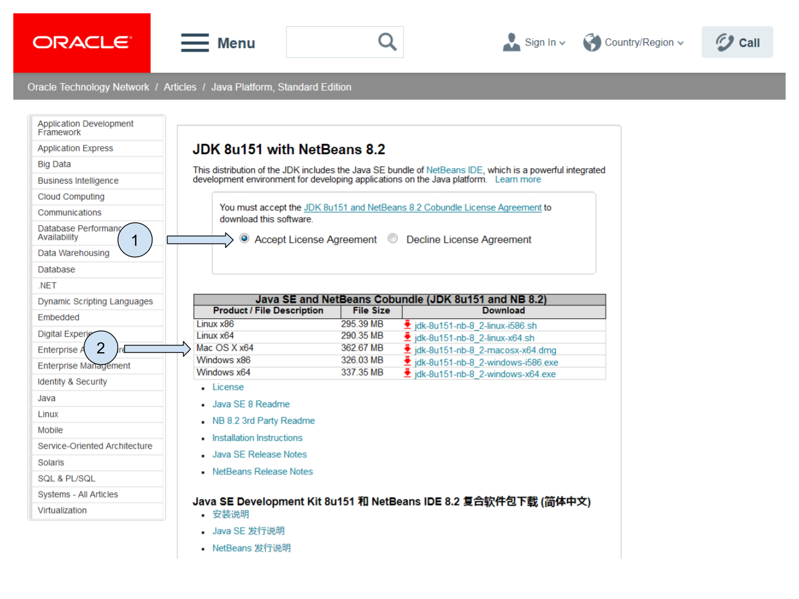

public void start() {
if(current != null){
current.show();
return;
}
Form hi = new Form("Hi World", BoxLayout.y()); (1)
hi.add(new Label("Hi World")); (2)
hi.show(); (3)
}= Learn how to build your first mobile app, for beginners
Github is a website specializing in hosting content (mostly code but not only), providing tools for teams to collaborate easily on this content and share it.
It is very famous in the community of programmers.
Github’s icon is a cat which is also an octopus:

Figure 1. Github’s mascot
Github is equivalent to Bitbucket, its main competitor.
Github and Bitbucket are used by all professional teams of developers.
They are convenient places to put your work and showcase it.
Actually, many employers ask to see your "Github profile" to better evaluate your skills in coding projects.
All the content of Codapps (this course) is hosted on Github: pdfs, pictures, slides… and the code of the apps we build as well.
Among many other features, Github has a forum for Q&As. You will be able to use this forum to search for information or ask new questions about the lessons of CODAPPS.
If you don’t already have a Github account, you sign in for one here: https://github.com

Figure 2. creating an account on Github
| A question on Github is called an "issue" |
Once you are logged in Github, simply go here:
You will see the list of questions already asked and the answers. You can search for questions with the search bar!
You can ask a new question by hitting the green button "New issue"
You must use a precise title (not just "it does not work"), and describe the problem in as much details as you can. Adding screenshots often helps!
You will be notified by email when somebody replies to you!
Do you feel like helping out fellow participants in CODAPPS? You surely can!
If you spot a question you have the answer for, or if you know the question has already been asked and answered, you are free to provide some help!
= = How to install NetBeans and the Codename One plugin on a PC
Go to http://www.oracle.com/technetwork/articles/javase/jdk-netbeans-jsp-142931.html
Click on “Accept License Agreement”.
There are two different files for Windows. Which one should you choose?

Figure 3. Downloading NetBeans for PC
If you don’t know, choose “jdk-8u151-nb-8_2-windows-i586.exe” (see below)
If you are absolutely sure you run a 64-bit version of Windows, choose Windows x64.
Find the file you downloaded on your computer and click on it to install.
- Note
you might need administrator rights to install software on your PC!
Now that we have NetBeans installed, let’s add the Codename One plugin.
Open NetBeans. In the menu, select Tools → Plugins.
In the windows opening, select “Available plugins”.
Plugins can be listed alphabetically by clicking on the column “name”, that makes them easier to find.
Search for “Codename One”.
Select the Codename One plugin by ticking the box on the left.
Click on “Install” and follow the instructions.
Congratulations, you are ready to create your first mobile app!
= = How to install NetBeans and the Codename One plugin on a MAC
Your MAC needs to run OS X 10.7 (Lion) or a more recent version. Find out the OS X version of your MAC.
Go to http://www.oracle.com/technetwork/articles/javase/jdk-netbeans-jsp-142931.html
Click on “Accept License Agreement”.
Download the file “jdk-8u151-nb-8_2-macosx-x64.dmg” (see below)

Figure 4. Downloading NetBeans for a MAC
Find the file you downloaded on your computer and click on it to install.
- Note
you might need administrator rights to install software on your MAC!
Now that we have NetBeans installed, let’s add the Codename One plugin.
Open NetBeans. In the menu, select Tools → Plugins.
In the windows opening, select “Available plugins”.
Plugins can be listed alphabetically by clicking on the column “name”, that makes them easier to find.
Search for “Codename One”.
Select the Codename One plugin by ticking the box on the left.
Click on “Install” and follow the instructions.
Congratulations, you are ready to create your first mobile app!
= = Checking for plugin updates
The Codename One plugin is the tool that enables us to apps with NetBeans.
You have installed the plugin, but the creators of the plugin continue to make it evolve, adding new functionalities to it.
It is important to have the latest version of the plugin installed.
When you open NetBeans, it actually checks for you if there is any update available:

Figure 5. Update available
If there is a notification, it means updates are available. Click on the bubble and follow the instructions to download and install the updates.
You can have updates for the Codename One plugin, but also for other components of NetBeans you are not familiar with.
I advise you to install all the updates available.
Now, what if you already had created an app in NetBeans? It will not automatically benefit from the updated plugin.
Follow these steps:
Right click on the project’s name, select 'Properties'
In the window that opens, click on “Update project libs”. Close the window
Right click again on the project’s name. Click on “Clean and Build”. You should be good to go!
It sometimes happens that the address that NetBeans checks for plugin updates is incorrect.
In this case, NetBeans will never find updates and you’ll be stuck with an old version of the plugin!
Here is how to make sure you have everything correctly setup (explanations follow the picture below)

Figure 6. Putting the correct web address
In the NetBeans menu, click on Tools → Plugin
In the window that opens, click on tab “Settings” (last tab on the right)
Select the line “CodenameOnePlugin Update Center”, it should be highlighted
Verify that the url (web address) on the right is:
https://www.codenameone.com/files/netbeans/updates.xmlIf it’s not, then click on “edit” and put this address above instead.
By default, updates are checked every week. Change this for “every startup”.
That’s it! You have to do it just once, next time NetBeans will now how to search plugin updates by itself!
Just check if there is a bubble at the bottom right corner when you open NetBeans.
= = Creating a project and previewing your first app
Open NetBeans
Click on the second icon from the left:
Figure 7. Clicking on the icon for new projects
Select a « CodenameOne project »:

Figure 8. Selecting a Codename One type of project
Then click on Next to move to the next screen.
Choose a name and a location for your project. Since the app will be about one of your interests / hobbies, choose in accordance!
Put no space in the name of your app - No special characters like - _# »& @ - No accent marks like é ù à or ñ, etc. |

Figure 9. Choosing the name and location of your project
This will be the administrative name of your app on the app store so please choose it carefully !
Then click on Next to move to the next screen:

Figure 10. Choosing the name and location of your project
We will explain in turn what package name, theme and template you should choose:
1. The "package name"
This is the official id of your app. Basically, this is the way for Google or Apple to give an ID card to your app.
It should be unique: one package name for each different app you create.
The package name should contain at least three parts separated by dots. The default value suggested com.mycompany.myapp
You should change this default value. |
How can we find a unique package name for an app?
The convention is to take the name of your website and reverse it:
→ if you build apps for emlyon (www.em-lyon.com), you’d have a package name like : com.emlyon.myfirstapp
If you don’t own a website, you can use the reverse of your email address. If your email is barackobama@gmail.com, your package name could be:
com.gmail.barackobama.myfirstapp
2. The "theme"
This defines the general colors and appearance of your app, how it will look like (you’ll be able to modify that later).
Please choose Native in the dropdown menu: this means that your app will have an Apple look on iOS, look like Android style on Android phones, etc.
3. The "template"
In the dropdown menu, choose the template « Hello World (Bare Bones) ».
This template allows us to design our app both with by drawing on screen and by programming (coding!).
Other templates would provide us with apps already prebuilt in some ways, we don’t use them.
Click on Finish and your app will be created.
4. Done! Preview your app.

Figure 11. Previewing your app
The files of your app appear on the left of your screen in NetBeans.
You can launch the preview of your app by clicking on the green arrow.
It should show a blank screen with "Hi World": in the next lesson, we will add a new screen, text and pictures!
= = Essential vocabulary and preliminary notions
a. Components
A mobile app can include many things. These are like the Lego blocks of our app:
pictures
buttons to press
videos
places where the user is supposed to write text
a menu to navigate the app
etc.
Things included in an app are called Components |
b. Actions
And the app is also supposed to do many things, for example:
open a web page when the user clicks a button
change the picture when the user swaps left
zoom in when the user double taps on the screen
make Angry Bird fly when the user plays the game
etc…
All an app can "do", we will call these Actions |
When building software like mobile apps, it is important to give precise names to the tools we use.
Often, these names don’t make intuitive sense, and this creates an impression of technical difficulty:

Figure 12. Getting confused by the technical vocabulary
It is not to be annoying, but to make sure we actually get the proper tool when we need it. Every domain of specialty, not just programmers, do this.
For instance, the screen showing our mobile application is not simply called a screen… why?
Because
screenis a name already taken, to name the phone’s actual physical screen (the one that breaks when your phone falls on the ground)So, what name should be given instead to the area an app takes on the screen of the phone: "ScreenApp"? "Region"? "FullSizeAppRegion? EmptyScreenOfTheAppWhereToPutThings"? None of this.
→ The designers of the tool chose the name Form.
A Form is the first Component we need when creating a mobile app. It is the empty region of the app where we will place all other Components. |
Because of this need for precise names, you will see that:
adding text to the app, we will use a Component named
Label(not Text)adding pictures to the app, we will use a Component named
Image(not Picture)adding buttons to the app, we will use a
ButtonComponent (this one is intuitive!)
To sum up what we have seen so far:
when we start designing an app, we need to create a
Formfirst.Then we will place Components in the Form: Buttons, Labels, Images, etc.
Then we can attach actions to each of these components (a "click action" on a button, etc)
How will you do that in practice? There are two ways.
a. DIY or the Ikea way?
Building a new mobile app is like building a new piece of furniture : you can build it yourself from scratch, or buy it at Ikea and just assemble it.
Codename One, the framewok we use, gives you these two options: Do It YourSelf (DYI) or Ikea.
DYI: write the code to create everything in the app.
IKEA: use a "Graphical User Interface" (GUI), which means you drag and drop things to build the app with a minimum of code to write.
There are different benefits to both approaches:
| Do It Yourself / writing code | Ikea approach / using a Graphical User Interface (GUI) | |
|---|---|---|
Benefits | Very flexible! You control every parameter since you write everything yourself | Quick and easy! You just drag and drop things, click and point with the mouse, no need to learn how to code. |
Inconvenients | You need to learn how to code. Slow since you write everything yourself. | You get stuck at some point: to add features to your mobile app, not everything is in the GUI. Writing code is going to be necessary. |
b. An example: creating a form by writing some code (DYI approach)
You write the code in NetBeans, in the files of your app. These files are visible here:

Figure 13. The files of your app visible in NetBeans
Double click on the file MyApplication.java to see its content on the right panel in NetBeans:

Figure 14. Opening the content of MyApplication.java for editing
When we created the project, an empty screen was added to it by default.
You can see this empty screen by previewing your app (click on the green arrow in NetBeans, or get back to the lesson here)
How was this empty screen added to the app?
Simply with these 2 lines of code in the file MyApplication.java (scroll down a bit in NetBeans, as they are in the middle of the file):
MyApplication.java
This line creates the screen with a title and an horizontal layout
This line adds a piece of text saying ("Hi World"). It could have been removed.
This line causes the screen to appear (otherwise it would remain hidden)
c. Another example: creating a form without code - with the GUI (the Ikea approach)
(in progress)